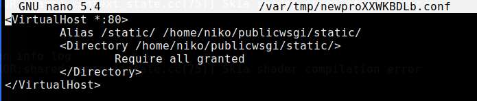
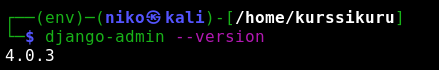

Djangon asentaminen palvelimelle
Ensimmäiseksi päivitin metadatan komennolla sudo apt-get update ja vaihdoin apachen testisivun

Loin käyttäjällä weppisisältöä
Seraavaksi loin virtual hostin komennolla sudoedit /etc/apache2/sites-available/newpro.conf
Ja otin luomani .conf tiedoston käyttöön ja poistin muut käytöstä a2ensite newpro.conf ja a2dissite komennoilla.
Seuraavaksi tarkistin vielä konfiguraatiot /sbin/apache2ctl configtest -komennolla
Syntaksi oli OK, jonka jälkeen uudelleen käynnistin Apachen sudo systemctl restart apache2
Seuraavaksi tarkistin onko minulla pääsy tiedostoihin curl http://localhost/static/

Seuraavaksi asensin VirtualEnv ja loin virtuaaliympäristön:
Käynnistin virtuaaliympäristön, asensin Djangon ja tarkistin onnistuiko asennus:
Jostain syystä requirements.txt kautta ei löytynyt djangon verioita, joten tein asennuksen "manuaalisesti": pip install Django==4.0.3
Loin uuden projektin django-admin starproject newpro, jonka jälkeen menin muokkaamaan aiemmin luomaani .conf tiedostoa

Seuraavaksi asensin Apachen wsgi moduulin sudo apt-get -y install libapache2-mod-wsgi-py3, tarkistin konfiguraatiot /sbin/apache2ctl configtest, sekä käynnistin Apachen uudestaan sudo systemctl restart apache2. Syntaksi oli OK
Annoin pari eri curl komentoa ja ei ainakaan tullut virheilmoituksia, joten jatkoin seuraavaan vaiheeseen.

Poistin debuggauksen käytöstä ja lisäsin nikonyman.net allowed hosts kohtaan.

"Kosketin" vielä wsgi.py tiedostoa touch newpro/wsgi.py ja käynnistin uudelleen Apachen, jotta asetukset tulisivat voimaan
Lopputulos
Ymmärsin tehtävän niin, että tarkoitus olisi ollut saada djangon sivut näkymään vuokraamassani osoitteessa. Tässä en kuitenkaan onnistunut. En myöskään päässyt serverin kautta katsomaan localhost osoitetta "no DISPAY enviroment variable specified". Ongelmien ratkomiseen käytin kymmeniä tunteja, mutta päädyin aina tekemään samoja juttuja. Epäselväksi jäi myös oliko Djangon sivut tarkoitus saada näkymään nikonyman.net, nikonyman.net/admin, nikonymn.net/static/admin vai localhost:8000/admin osoitteessa.
Tarkistin tiedostojen oikeudet, tein /sbin/apache2ctl configtest, poistin projektin palautin alkuperäiset asetukset ja toistin tehtävän Deploy Django 4 - Production install mukaan kymmeniä kertoja uudestaan samalla lopputuloksella. Error.logista en löytänyt mitään kummempaa, testiserveri lähti pyörimään normaalisti, tein migraatiot. Googlesta : django, django project, deploying django, file permissions, ssh display, xorg, xauth. Lisäksi jäi mietityttämään curl -s localhost|grep title -komento, joka ei antanut mitään tulosta. Jotain on siis jäänyt ymmärtämättä ja vika tuntuisi olevan tekijässä.
PÄIVITYS 7.3.2022. Viime keskiviikon (2.7) luennolla nähtjen esimerkkien perusteella (sekä error.login tarkastelun ja sen faktan että djangon suhteen kaikki toimii) onnistuin tehtävässä heti alkujaan. Hämmenystä aiheutti ongelma näytön "jakamisessa" ssh yhteydellä. Tämä ongelm korjaantui tutkailemalla ssh man pagea - ssh -Y [ip-osoite]. Tosin firefox toimii jotenkin hitaasti (kirjoittaessa tulee yksi kirjain 3-4 sekunnin välein eli viivettä on). Tämän selvittely jatkuu.
Lopputulos
Asensin Djangon onnistuneesti vuokraamalleni palvelimelle. Loin uuden .conf tiedoston sivulleni ja sain esutkset toimimaan. Djangon testiserveri lähti pyörimään normaalisti, eikö error.logista löytynyt mitään. Ongelmia tuotti selaimen aukaisu serveriltä, mutta siihen löytyi ratkaisu selaamalla ssh man pagea. Selain toimii edelleen tdella hitaasti, mutta sen selvitteäminen jatkuu.